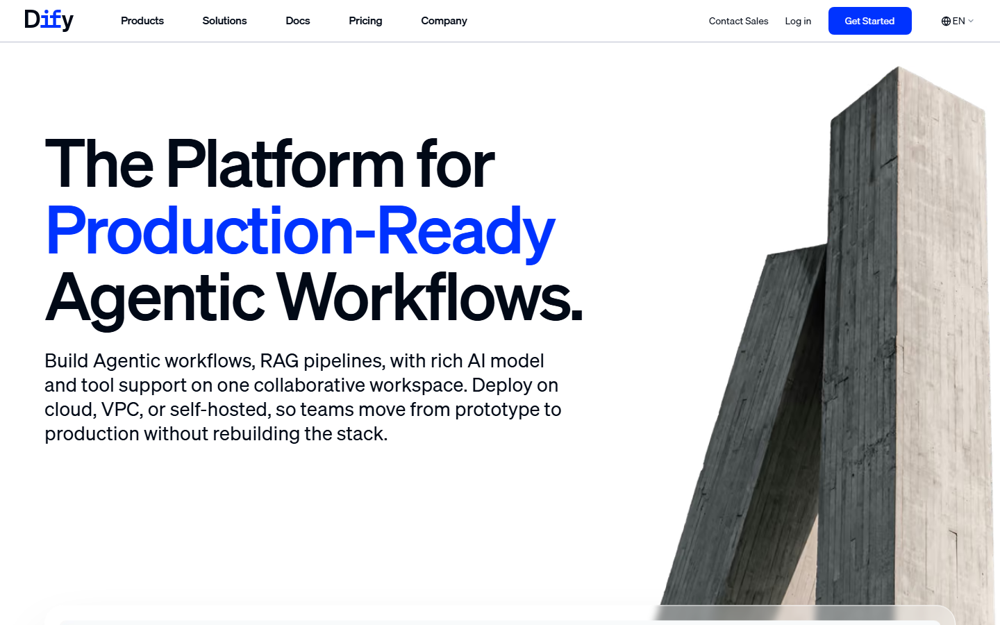
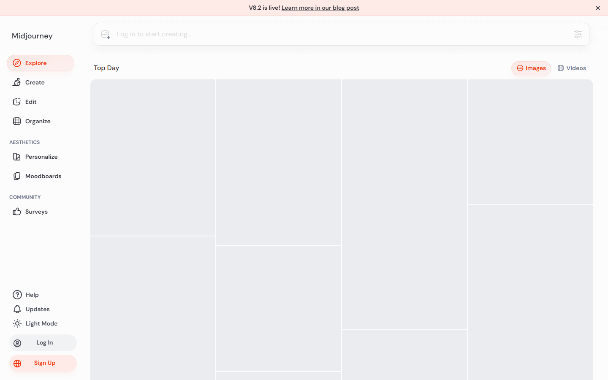
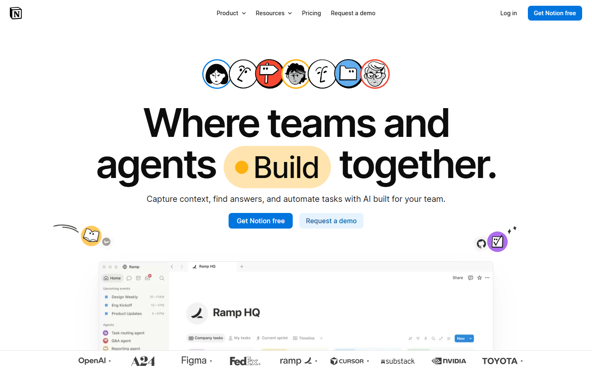
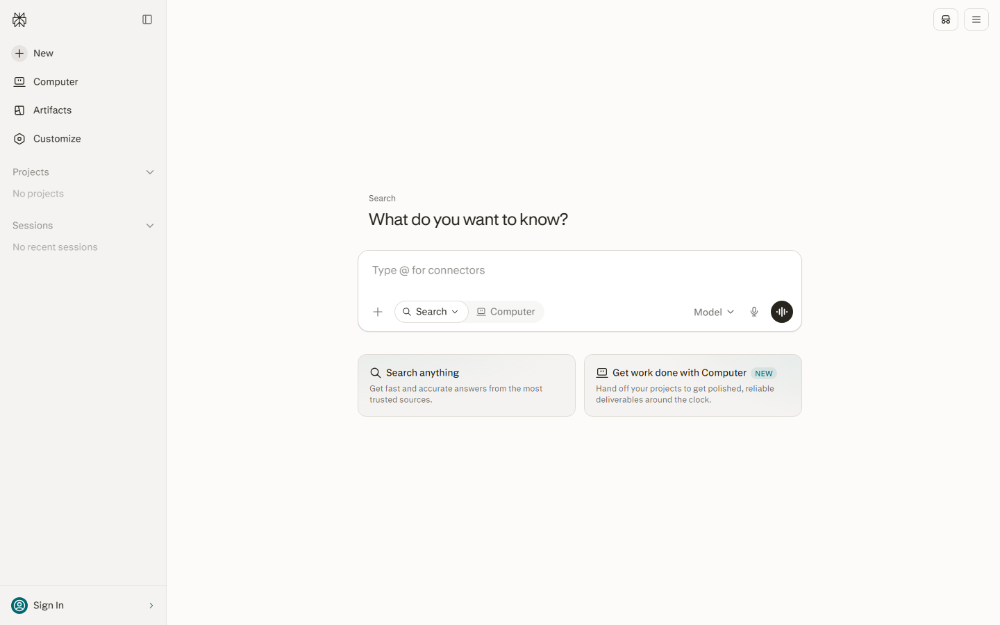
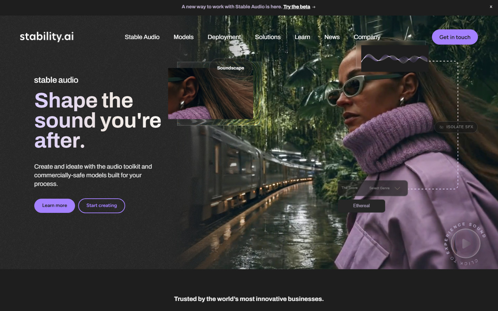

Batch 6 Preview
PASS: 2/5. Failures: dify (marketing), stable-diffusion (marketing), midjourney (images not loaded). These 3 need YouTube frames.
dify [FAIL]

1440x900 · 314KB · Marketing homepage, not product UI. Needs login (cloud.dify.ai)
midjourney [FAIL]

1440x900 · 59KB · Showcase page UI visible but images not loaded (gray placeholders)
notion-ai [PASS]

1440x900 · 170KB · Notion homepage showing real product UI (Ramp HQ screenshot, calendar, AI agents)
perplexity [PASS]

1440x900 · 74KB · Real homepage UI: left nav, search box, feature cards. Modal closed.
stable-diffusion [FAIL]

1440x900 · 1194KB · Stable Audio marketing page, not SD UI. Needs login (dreamstudio)